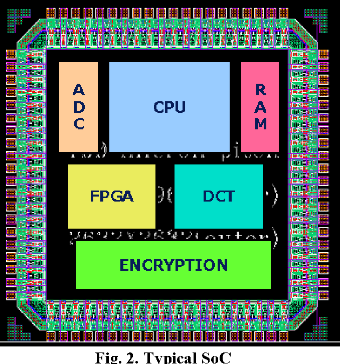

Meer informatie en uitleg over de System-on-a-chip!
Een "System on a Chip" (SoC) is een geïntegreerd circuit (IC) die alle belangrijke componenten en
functies van een volledig computersysteem op één chip combineert.
Op zo'n chip staan over het algemeen de volgende dingen:
Processor (CPU): De CPU is het rekenkundige brein van het systeem en voert instructies uit. In een SoC is de CPU
vaak ontworpen om te voldoen aan de specifieke behoeften van het doelapparaat, zoals een smartphone of tablet.
Geheugen: SoC's bevatten meestal een ingebouwd geheugen, zoals RAM (Random Access Memory)
en ROM (Read-Only Memory), om gegevens en instructies op te slaan.
Grafische verwerkingseenheid (GPU): De GPU is verantwoordelijk voor het verwerken van grafische taken,
zoals het laten zien van beelden en video's op het scherm.
Communicatiecomponenten: SoC's hebben vaak ingebouwde communicatie-interfaces zoals Wi-Fi, Bluetooth,
GPS en mobiele netwerkverbindingen om gegevens te verzenden en ontvangen.
I/O-interfaces: Ze bevatten aansluitingen voor het aansluiten van randapparatuur zoals camera's, sensoren, schermen,
USB-poorten en meer.
Energiebeheer: SoC's bevatten energiebeheerfuncties om het stroomverbruik te optimaliseren en de batterijduur te
verlengen in draagbare apparaten.
Beveiliging: Er zijn vaak beveiligingsmaatregelen ingebouwd in SoC's om gegevens te beschermen, zoals encryptie en
beveiligde opslag.
Klok- en timingregeling: SoC's hebben een interne klok die de timing van alle activiteiten op de chip coördineert
SoC's worden vaak gebruikt in mobiele apparaten zoals smartphones en tablets vanwege hun compacte ontwerp
en efficiëntie. Ze worden echter ook steeds meer toegepast in andere apparaten, zoals IoT-apparaten, smartwatches,
slimme huishoudelijke apparaten en zelfs sommige laptops. Het integreren van meerdere functies op één chip vermindert
de ruimte die nodig is en verbetert de prestaties en energie-efficiëntie van deze apparaten.
